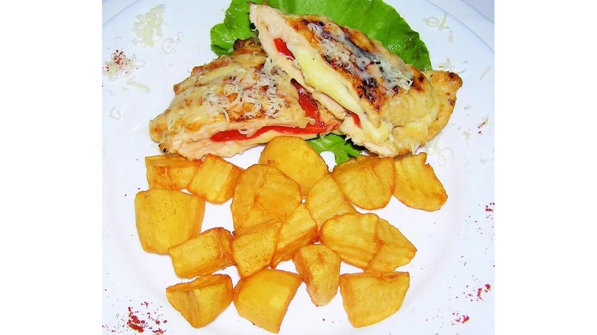
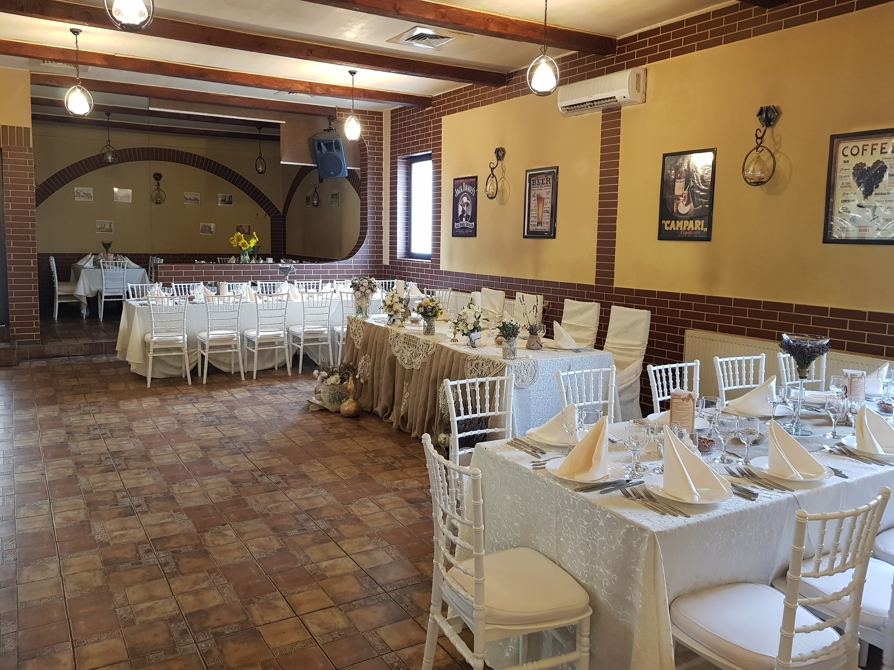

Piept de pui umplut cu mozzarella
35 leiPiept de pui la grătar umplut cu mozzarella, cartofi aurii, salată verde · 450 g

Grătar la comandă, preparate românești și salate proaspete, într-o atmosferă caldă și tradițională pe Strada Victoriei. Sănătos și gustos — la masă sau la pachet.
La Forever gătim bucate ca acasă: grătar la comandă, sarmale cu mămăliguță, garniță de porc și salate proaspete, alături de deserturi tradiționale precum papanașii și clătitele. Deviza noastră este simplă — sănătos și gustos.
Suntem restaurant și pub pe Strada Victoriei nr. 70, cu un salon primitor, terasă și un spațiu potrivit pentru sărbători. Peste 3.300 de prieteni ne urmăresc pe Facebook, iar mii de oaspeți ne-au trecut deja pragul.
Fie că vrei o masă de prânz, un platou la pachet sau organizarea unui eveniment, te așteptăm cu porții generoase, ingrediente de calitate și o primire caldă, tradițională.
Trei motive pentru care piteștenii revin la noi, zi după zi.
Piept și pulpe de pui, ceafă și cotlet de porc, mititei și pastramă de berbecuț — gătite pe loc, cu cartofi și salate proaspete.
Sarmale cu mămăliguță, garniță de porc, salate de sezon și papanași de casă. Rețete tradiționale, gătite proaspăt în fiecare zi.
Platouri reci și calde pentru 5 persoane, catering și un salon pentru botezuri, aniversări sau mese de firmă. Spune-ne ce pui la cale.
Câteva dintre preparatele și atmosfera care te așteaptă la Forever.
Trei lucruri pe care le punem în fiecare farfurie pe care o trimitem la masă.
„Gătim proaspăt, în fiecare zi — grătar la comandă și preparate românești, așa cum ne-am dori și noi să le găsim.”
„Porții generoase, ingrediente de calitate și un preț corect. La masă, la pachet sau pe Wolt.”
„O primire caldă, tradițională, și un salon numai bun pentru sărbătorile tale — de la botez la aniversare.”